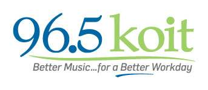

HELP KIDS STAY SAFE AND SMART THIS SUMMER!

San Francisco Supervisor Jane Kim (District 6), with help from 96.5 KOIT, is on board to help underserved kids have summer programming!
Supervisor Jane is matching $10,000 in donations so that West Bay Pilipino, a Filipino-led nonprofit that helps underserved kids in her district, can keep its doors open this summer and offer strong programming in Science, Technology, Engineering and Math (STEM).
Here's the backstory.
The City of San Francisco cut summer program funding for the first time in 2014.
Summer 2015, it's the same thing. There is NO city funding for summer children’s programming, when supervision is needed most.
Kids in one of San Francisco's poorest neighborhoods, the South of Market, will be vulnerable to gang involvement, violence and dangerous influences on the street if agencies like ours shut our doors.
West Bay Pilipino needs your help so it can offer FREE academic enrichment activities such as STEM, and a safe place for kids from low-income families of San Francisco during the summer, while their parents are at work.
The City of San Francisco cut summer program funding for the first time in 2014.
Summer 2015, it's the same thing. There is NO city funding for summer children’s programming, when supervision is needed most.
Kids in one of San Francisco's poorest neighborhoods, the South of Market, will be vulnerable to gang involvement, violence and dangerous influences on the street if agencies like ours shut our doors.
West Bay Pilipino needs your help so it can offer FREE academic enrichment activities such as STEM, and a safe place for kids from low-income families of San Francisco during the summer, while their parents are at work.
Help us match Supervisor Jane Kim’s $10,000!
We need your help to raise matching funds of $10,000 so that underserved kids can stay SAFE and SMART this summer. Will you help us?
$20,000 will give from 60-100 underserved kids and their families access to FREE or very low-cost activities that include:
- Eight hours of supervised activities (from 10 AM - 6 PM), free meals included.
- Academic enrichment in science, technology, engineering, math. Art, too!
- Sports like baseball and basketball.
- Educational field trips to Academy of Sciences, Exploratorium and others.
- Fun summer activities such as trips to Great America, Blackberry Farms and camping.
So please, donate and join Supervisor Jane Kim to raise $20,000 to give our kids a SAFE and SMART SUMMER!